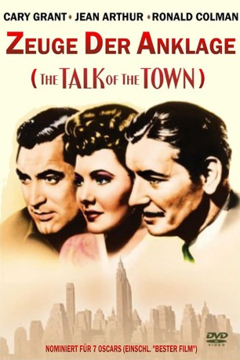
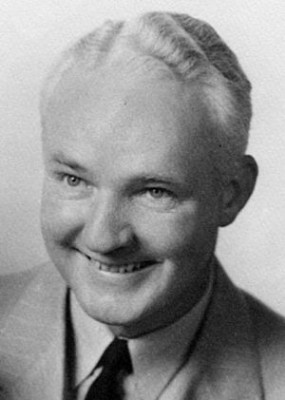

#11266 Zeuge der Anklage
Alternativ: The Talk of the Town (Englischer Titel)
Auszeichnungen: für 7 Oscars nominiert
 
 IMDB-Wertung: 7.5 / 10
IMDB-Wertung: 7.5 / 10  Metascore: 0
Metascore: 0 
Wegen Brandstiftung und Mordes gejagt, kann ein Unschuldiger flüchten und sich im Haus einer jungen Frau verbergen. Dort trifft er auf ihren neuen Mieter einen peniblen Rechtskundigen, mit dem er über Wortlaut und Auslegen der Gesetze debattiert, bis seine wahre Identität bekannt wird…
Jahr: 1942
Dauer: 112 Minuten
FSK:
Land: USA Studio: Columbia PicturesTonspuren:
Untertitel:
Auflösung: 720p (1060x720) Größe: 3584 MB
Genre: Thriller, Drama, Komödie, Liebe
Regisseur:  George Stevens
George Stevens
Drehbuch: Irwin Shaw, Sidney Buchman, Dale Van Every, Sidney Harmon
Soundtrack: Friedrich Hollaender
Darsteller:
 Cary Grant als Leopold Dilg
Cary Grant als Leopold Dilg- Jean Arthur als Nora Shelley
- Ronald Colman als Professor Michael Lightcap
 Edgar Buchanan als Sam Yates
Edgar Buchanan als Sam Yates- Glenda Farrell als Regina Bush
- Charles Dingle als Andrew Holmes
- Emma Dunn als Mrs. Shelley
- Rex Ingram als Tilney
- Leonid Kinskey als Jan Pulaski
 Tom Tyler als Clyde Bracken
Tom Tyler als Clyde Bracken Don Beddoe als Police Chief
Don Beddoe als Police Chief Sam Ash als Supreme Court Spectator (uncredited)
Sam Ash als Supreme Court Spectator (uncredited)- Dorothy Babb als Schoolgirl Noticing Beard (uncredited)
- Georgia Backus als Townswoman (uncredited)
 William 'Billy' Benedict als Western Union Boy (uncredited)
William 'Billy' Benedict als Western Union Boy (uncredited) Al Bridge als Desk Sergeant (uncredited)
Al Bridge als Desk Sergeant (uncredited) Lloyd Bridges als Donald Forrester (uncredited)
Lloyd Bridges als Donald Forrester (uncredited)- Leslie Brooks als Secretary (uncredited)
- Eddie Bruce als Reporter (uncredited)
 Gino Corrado als Nightclub Waiter (uncredited)
Gino Corrado als Nightclub Waiter (uncredited) Ralph Dunn als Cop on Stairs (uncredited)
Ralph Dunn als Cop on Stairs (uncredited)- Joe Garcio als Townsman (uncredited)
 Bud Geary als Townsman (uncredited)
Bud Geary als Townsman (uncredited)- William Gould als Sheriff with Hounds (uncredited)
 Edward Hearn als Sergeant (uncredited)
Edward Hearn als Sergeant (uncredited)- Maynard Holmes als Vendor (uncredited)
- Joe McGuinn als Jailer Overpowered by Dilg (uncredited)
-  Frank McLure als Nightclub Patron (uncredited)
 Frank Mills als Townsman (uncredited)
Frank Mills als Townsman (uncredited)- Clarence Muse als Supreme Court Doorkeeper (uncredited)
 Frank O'Connor als Courtroom Spectator (uncredited)
Frank O'Connor als Courtroom Spectator (uncredited)- Blanche Payson als Supreme Court Spectator (uncredited)
- Ralph Peters als Eddie, Moving Man (uncredited)
- Dewey Robinson als Jake (uncredited)
- Cy Schindell als Townsman at Ballgame (uncredited)
 Dan Seymour als Headwaiter at Nightclub (uncredited)
Dan Seymour als Headwaiter at Nightclub (uncredited)- Frank Sully als Policeman in Station Wagon (uncredited)
- Frank M. Thomas als District Attorney Scott (uncredited)
- Mabel Todd als Operator (uncredited)
- Lelah Tyler als Townswoman (uncredited)
- John Tyrrell als Townsman at Ballgame (uncredited)
 Max Wagner als Moving Man (uncredited)
Max Wagner als Moving Man (uncredited)- Robert Walker als Deputy Sheriff (uncredited)
- Holger Bendixen als Townsman (uncredited)
- Ferike Boros als Mrs. Pulaski (uncredited)
- Jack Carr als Usher (uncredited)
- Eddie Coke als Reporter (uncredited)
- Joe Cunningham als McGuire (uncredited)
- Lew Davis als Waiter at Regina's Shop (uncredited)
- Al Ferguson als Detective (uncredited)
Datei: X:\1900-1949\Zeuge der Anklage (1942, FSK, 1060x720).mkv seit 06.06.2019
Festplatte: Gemischt-01+Anime
 Es gibt insgesamt 80 Filme in der Gruppe '1900-1949'
Es gibt insgesamt 80 Filme in der Gruppe '1900-1949'